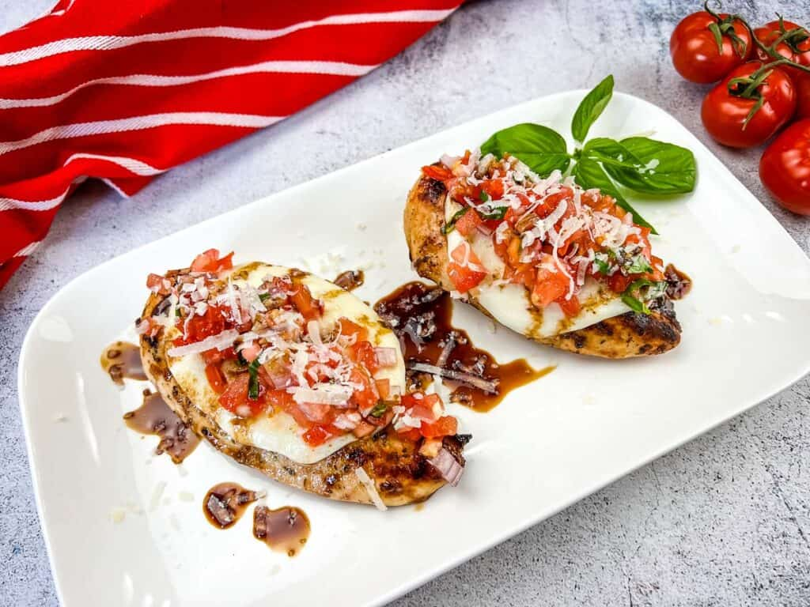

Grilled Bruschetta Chicken Recipe

Description
Grilled bruschetta chicken is a delicious marriage of bruschetta and grilled chicken breasts. It makes an easy, lively main dish. Use fresh garden tomatoes or Roma tomatoes and as much garlic and basil as you dare! We love this with fresh steamed broccoli or a tossed green salad.
Ingredients
- 2 tomatoes, cored
- 1/4 cup extra virgin olive oil
- 1 clove garlic, minced
- 1 teaspoon salt, divided, or to taste
- 1/2 teaspoon freshly ground black pepper, divided, or to taste
- 2 tablespoons torn fresh basil leaves, plus more leaves for garnish
- 1/2 cup purchased croutons
- 4 boneless, skinless chicken breast halves
- 1/2 teaspoon garlic powder
- 1/2 teaspoon sweet paprika
- 1 tablespoon olive oil, or as needed, for oiling the grill
Home